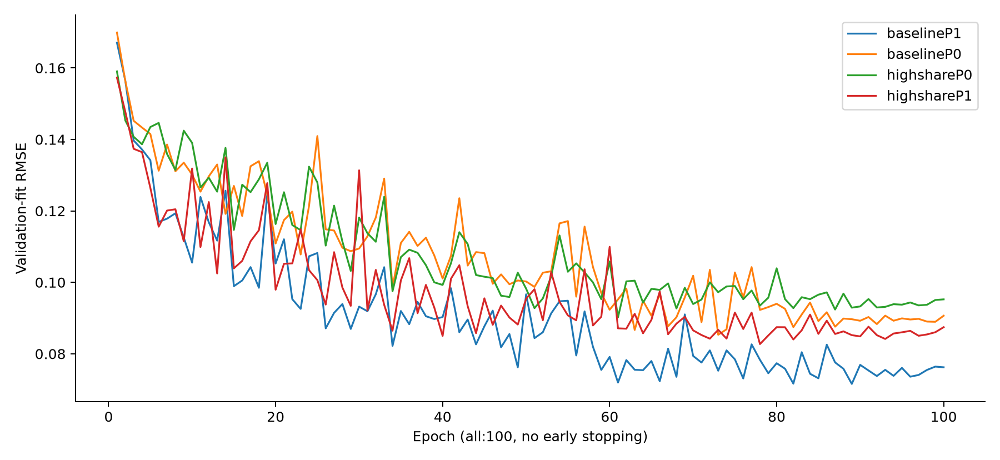
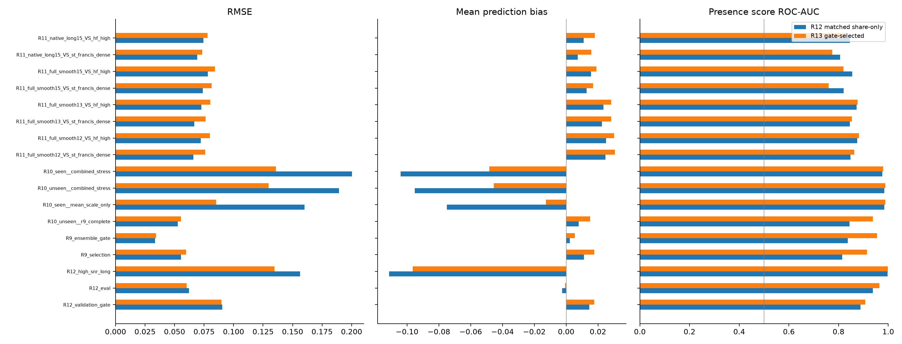

R13 고비율·독립 분류기·PCA 비교 결과
범위: Mac CPU의 소형 후속 실험이다. 신경망 본체 5-Fold 학습이나 새 Test.csv 제출 점수가 아니다. Test/리더보드로 정책을 선택하지 않았고 기존 R12 결과도 수정하지 않았다. R10/R11 및 R12 평가 패널은 이미 개발 과정에 노출됐으므로 새 맹검·OOF로 부르지 않는다.
선택된 회귀 조건은 highshareP1, 진단 score는 (1−λ)×share + λ×독립 Tree classifier, λ=0.5다. CNN/Tree 회귀 비중은 각각50%로 고정했다. 모든 학습을 동결한 뒤 gate RMSE로 회귀 조건을 선택하고 같은 gate AUC로 사전 지정된 λ 4개 중 하나를 골랐다. 그 후 정책 SHA를 저장하고 eval을 읽었다.
고SNR·장시간 패널 RMSE 0.156340→0.134734, bias -0.111366→-0.096543. 미관측 일반 패널 RMSE 0.052679→0.055365, score AUC 0.844269→0.938044. 15분/SF score AUC 0.820224→0.759756. 개선 여부는 패널별로 구분하며 일부 수치만으로 모든 목표를 달성했다고 판정하지 않는다.
판정: 요청한 모든 패널의 동시 개선 조건은 미달이다. 고SNR 과소추정이 줄고 일반 분류 AUC는 회복됐지만, 15분/SF 및 native/SF 분류와 일부 일반 RMSE는 악화됐다. 현재 조건을 완전히 해결된 생산 표준으로 확정하거나 GPU 전체 학습을 자동 시작하지 않았다. 아래의 본체 러너 준비는 이 성능 판정과 별도의 기술 준비다.
1. 실제 데이터 개편과 원인 가설의 한계
기반은 사이트·센서·녹음기 라벨·정확 mask를 일치시킨 R12 matched control이다. 제거된 것은 확인된 class-mask 교란이며 모든 사이트 편향이 사라졌다는 뜻은 아니다. 양성9600개 중2400개의 추가 세기 alpha만 변경했다. zero2400(20%), long-positive2880(양성30%), source·참조·배치·EQ·mask는 유지했다. 새 highshare 대상은 long720/standard1680이며 목표는 고정 seed 층화 LHS Uniform(.25,.85)다. CNN6000부분집합에서도 정확1200개만 변경했다.
기존 TRAIN의 long-positive 평균 share는 이미 0.3173이었고 전체 y≥.5 예제는1,244개였다. 명시적인 share cap도 없었다. 따라서 “장시간 예제가 전부 저비율이고 cap을 배웠다”는 원인은 확정할 수 없다. 이번 비교는 중·고비율 관측을 더 공급했을 때의 효과를 직접 측정하는 개입이다.
새 TRAIN positive 평균은0.203439→0.290995, y≥.5는1244→2347이다. 일부 기존 높은 share도 Uniform 목표에 따라 낮아져 증가2117/감소283개다. 임의 max(oldy,target)나 Test 모멘트 맞춤을 사용하지 않았다. 정답은 raw B/A/E에서 재계산했고 입력과 w만0.1dB 관측을 쓴다. 전수 물리 검산·분포 / 원수치
2. 학습과 실제 예산
동일한26,953개 파라미터 CNN·같은6000TRAIN·같은validation_fit1000으로P0/P1을 비교했다. 모두100epoch/Adam/dropout0.1/no early stopping/최저fit RMSE checkpoint다. baselineP1은 배열·subset·PCA·seed·손실·100epoch 규약이 동일한 완료된 R12 strict control을 재사용했다. 중단된 부분 run은 재사용하지 않았다. 다른CNN3개 및 LightGBM4조건(각회귀기+독립분류기)은 새로 학습했다.
마스크 손실은 Share MSE+.25×energy-weighted cell MSE만 사용한다. 분류 확률은 별도 Tree 모델에서 생성하므로 q에 분류 BCE 기울기가 흐르지 않는다. P0도shape3채널0패딩으로CNN예산을같게했다. Tree는P0/P1각466/673특징,12000TRAIN,최대1500trees/ES40다.
| CNN조건 | 실행epoch | best epoch | fit RMSE | 출처 |
|---|
| baselineP1 | 100 | 89 | 0.071565 | completed control reuse |
| baselineP0 | 100 | 73 | 0.085329 | new fit |
| highshareP0 | 100 | 61 | 0.090196 | new fit |
| highshareP1 | 100 | 78 | 0.082713 | new fit |

3. PCA와 고비율 보강의 대응 비교
| 조건 | eval RMSE | 고SNR RMSE | 고SNR bias | unseen RMSE | unseen share AUC | full15/SF share AUC |
|---|
| baselineP0 | 0.066673 | 0.170105 | -0.115166 | 0.057838 | 0.809213 | 0.742064 |
| baselineP1 | 0.062234 | 0.156340 | -0.111366 | 0.052679 | 0.844269 | 0.820224 |
| highshareP0 | 0.068106 | 0.160107 | -0.109872 | 0.056763 | 0.808688 | 0.737545 |
| highshareP1 | 0.060119 | 0.134734 | -0.096543 | 0.055365 | 0.851231 | 0.782135 |
P0/P1의 모델 예산과 데이터는 같으므로 이 비교는 PCA 잔차 표현의 영향과 방향을 보여준다. 기본 데이터에서 unseen RMSE는 P0 0.057838 → P1 0.052679, 고비율 데이터에서는 P0 0.056763 → P1 0.055365였다. 이 비교에서는 PCA 제거가 해결책이 아니었다. 다만 대형 본체와 미니 모델의 용량 차이는 GPU 본체 실험 전에는 분리할 수 없다. PCA는 Fold0 TRAIN 배경에만 적합했고 다른 fold의 PCA로 공유하지 않는다.
4. 독립 분류기 score: 이득과 손해를 함께 표시
| 패널 | λ0 share-only AUC | λ.25 AUC | λ.5 AUC | λ1 classifier AUC |
|---|
| R9_selection | 0.815637 | 0.905764 | 0.913787 | 0.920682 |
| R10_unseen__r9_complete | 0.851231 | 0.926512 | 0.938044 | 0.945800 |
| R11_full_smooth15_VS_st_francis_dense | 0.782135 | 0.758436 | 0.759756 | 0.760763 |
| R11_native_long15_VS_st_francis_dense | 0.778795 | 0.771192 | 0.774827 | 0.777237 |
| R11_full_smooth15_VS_hf_high | 0.827360 | 0.821940 | 0.819604 | 0.821532 |
λ는gate만으로선택했다. 아래 개발 패널별로 가장 좋은λ를 따로 골라 붙이지 않았다. 진단score를바꿔도회귀share와RMSE는변하지않는다. Brier는추가유무presence에대한값이고에너지share오차가아니다. 원R12저장예측만분석한별도snapshot에서는일반AUC개선과장시간/SF악화가함께있었으므로무조건적인classifier복원은사용하지않았다. snapshot 별도 기록
추가로, 기존 matched 회귀와 새 고비율 회귀의 고정 혼합5종 × 독립 분류기 비중6종을 조합한30개 전역 결합을 별도 개발 분석으로 점검했다. 일반 AUC>0.9와 full15/SF·native/SF AUC≥0.8, 고SNR 회귀 개선을 함께 충족한 조합은0개였다. 즉, 이번30개 후보에서는 단순 가중치 조정만으로 상충을 해결하지 못했다. 연속 계수 전체나 다른 모델이 불가능하다는 증명은 아니며, 이 후속 결과로 원 R13 정책을 바꾸지 않았다. 30개 조합과 독립 검산
5. 17개 고정 패널 전체 결과
| 패널 | matched R12→R13 RMSE | bias | R13 share AUC | score AUC | R13 y>.2 bias |
|---|
| R12_validation_gate | 0.090328 → 0.089586 | +0.014500 → +0.017755 | 0.884550 | 0.888125 → 0.907388 | -0.011199 |
| R12_eval | 0.062234 → 0.060119 | -0.002600 → -0.000725 | 0.933600 | 0.938300 → 0.964300 | -0.019791 |
| R12_high_snr_long | 0.156340 → 0.134734 | -0.111366 → -0.096543 | 0.997325 | 0.996825 → 0.998375 | -0.127191 |
| R9_selection | 0.055490 → 0.059630 | +0.011175 → +0.017585 | 0.815637 | 0.814431 → 0.913787 | -0.010628 |
| R9_ensemble_gate | 0.033557 → 0.034120 | +0.002256 → +0.005479 | 0.834272 | 0.837354 → 0.954128 | -0.007397 |
| R10_unseen__r9_complete | 0.052679 → 0.055365 | +0.007800 → +0.015138 | 0.851231 | 0.844269 → 0.938044 | -0.005232 |
| R10_seen__mean_scale_only | 0.160046 → 0.085086 | -0.074884 → -0.012756 | 0.987581 | 0.984525 → 0.987319 | -0.035492 |
| R10_unseen__combined_stress | 0.189233 → 0.129641 | -0.095227 → -0.045498 | 0.984831 | 0.984281 → 0.987419 | -0.080459 |
| R10_seen__combined_stress | 0.200386 → 0.135844 | -0.104098 → -0.048307 | 0.981700 | 0.976231 → 0.979962 | -0.086885 |
| R11_full_smooth12_VS_st_francis_dense | 0.066016 → 0.075926 | +0.024626 → +0.030556 | 0.818462 | 0.847763 → 0.863833 | +0.014730 |
| R11_full_smooth12_VS_hf_high | 0.072166 → 0.080018 | +0.025104 → +0.030091 | 0.854596 | 0.874928 → 0.881740 | +0.014730 |
| R11_full_smooth13_VS_st_francis_dense | 0.066677 → 0.076217 | +0.022488 → +0.028160 | 0.811801 | 0.845173 → 0.854365 | +0.006383 |
| R11_full_smooth13_VS_hf_high | 0.072658 → 0.080242 | +0.023368 → +0.028146 | 0.849396 | 0.872744 → 0.875916 | +0.006383 |
| R11_full_smooth15_VS_st_francis_dense | 0.074042 → 0.081356 | +0.012865 → +0.016943 | 0.782135 | 0.820224 → 0.759756 | -0.033611 |
| R11_full_smooth15_VS_hf_high | 0.078235 → 0.084239 | +0.015554 → +0.019038 | 0.827360 | 0.855400 → 0.819604 | -0.033611 |
| R11_native_long15_VS_st_francis_dense | 0.069205 → 0.073330 | +0.007321 → +0.015734 | 0.778795 | 0.806051 → 0.774827 | -0.032507 |
| R11_native_long15_VS_hf_high | 0.074552 → 0.078027 | +0.011053 → +0.018056 | 0.824680 | 0.845136 → 0.830032 | -0.032507 |

모든 모델/score 후보 CSV / 고정 선택정책 / paired 군집 CI / 원예측·검산근거
독립 검산은 17개 패널·458행의 지표 12,366개를 원예측으로 재계산했고 차이는 0이었다. 99개 CI의 독립 재계산 차이는 최대5.55×10⁻¹⁷, 실제 q 마스크의 물리 pooling 오차는 최대1.34×10⁻⁷이었다. 독립 검산 보고서
R10 unseen의 군집은 기존 R12 로더에서 누락했던 sensor_group×recording_week_start를 이번 평가에 명시적으로 연결했다. 원자료와 R12 CI 파일은 바꾸지 않았다. 주간 CI 군집끼리는 최소15분 간격도 있어 군집 간 독립이 자동 보장되지는 않는다. 이는 TRAIN/heldout의 24시간 purge 위반과 다른 문제다. CI는 고정 패널·고정 모델에 조건부이며 gate 선택·단일 seed·참조 공유·여러 비교 불확실성을 완전히 보정하지 않는다.
6. 본체 학습과 제출 파일
CPU개선실험과GPU본체실행은별도단계다. 본체는WideBGMaskCNN/TFGrid-FDY-Conformer/FDY-CRNN/iTransformer/PhysicsLightGBM 5종이며fullTRAIN각epoch전수·원천5fold·24시간purge·Fold별TRAINPCA·동결추론규약으로준비한다. 새고정validation도동일물리레시피로별도생성하고원R9자료는비교용으로보존한다. GPU접속과CUDA1epoch실측전에는전체소요시간/메모리를확정하지않는다.
submission_r13.csv는본체학습·OOF/앙상블검증이실제로완료된뒤생성한다. 이CPU미니모델결과나기존R9파일을본체완성본으로이름만바꿔제공하지않는다.
본체 5-Fold 기술 준비 상태
7. 마지막 추가 대조: 약한 버전과 강한 버전을 함께 유지
고비율 고정 교체 때문에 원래 약한 사례가 사라졌을 가능성을 점검하기 위해, P1 조건 한 개를 추가했다. CNN은 같은6000개 primary를 epoch마다1회씩 사용하고, 바뀐1200개 양성 중600개만 강한 버전으로 선택했다. 다음 epoch는 나머지600개를 선택해 매2epoch마다 각 행의 약한/강한 버전을1회씩 학습했다. q/y뿐 아니라 입력 x와 에너지 가중치 w도 해당 버전으로 함께 바꿨다. zero1200·장시간1440·site/sensor/recorder/mask는 유지했다. 100epoch/Adam/no early stopping은 같았다.
Tree는 baseline12000+highshare12000의24,000행으로 학습했다. 고유 primary는12,000개이며, 공통9600행은 중복이다. 이를 새로 수집한 독립 녹음24,000개로 세지 않는다. Tree의 행 수가 바뀐 만큼 이 추가 비교는 CNN과 Tree 모두의 순수한 동일 예산 인과 분리를 보장하지 않는다.
이 조건도 동시 개선을 충족하지 못했다. 고SNR RMSE는0.148884로 최초 R12 matched0.156340보다 낫지만 원 R13 highshare0.134734보다 나빴다. 일반 AUC는 R9 selection0.92419 / R9 gate0.96406 / unseen0.95289로 높았지만 full15/SF0.76501·native/SF0.78197은0.8에 미달했다. 원래 약한 사례의 고정 교체만이 문제의 전부였다고 볼 수 없으며, 원 R13 선택 정책을 바꾸거나 이 조건을 생산 표준으로 승격하지 않았다.
추가 실험의 트리 실행부는 Mapping import 누락으로 실제 fit 전에 실패했고, 수정용 동적 helper 시도도 실제 fit 전에 중단했다. 두 기록은 보존했다. 최종 정적 helper에서만 Tree를 새로 학습했고, CNN은 정상적으로100epoch를 모두 마친 뒤 checkpoint와6개 파일의 바이트 일치를 확인해 별도 r2 완료 기록에 결박했다. 부분 checkpoint에서 학습을 재개하지 않았다.
추가 조건 전체 결과 / 지표 독립 검산 / 복구·source 독립 검산
사전고정설정 / R12 비교보고서